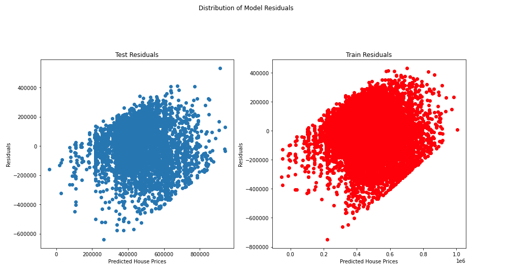

Import statements:
import pandas as pd
from datetime import datetime
import seaborn as sns
import matplotlib.pyplot as plt
%matplotlib inline
import statsmodels.api as sm
import scipy.stats as stats
from statsmodels.formula.api import ols
from sklearn.metrics import mean_squared_error
from sklearn.linear_model import LinearRegression
from sklearn.model_selection import train_test_split
from scipy.stats import norm
from statsmodels.stats.outliers_influence import variance_inflation_factor
Reading in the dataset:
df = pd.read_csv('kc_house_data.csv')
df.head()

Exploring and cleaning the dataset:
df.info()
# Looping through each column and printing the top 5 values of each
for col in df.columns:
try:
print(col, df[col].value_counts()[:5])
except:
print(col, df[col].value_counts())
print('\n')
# Deleting the ID column
del df['id']
df['date'] = pd.to_datetime(df['date'])
df['sale_year'] = df['date'].dt.year
df['sale_month'] = df['date'].dt.month
df['sale_DoW'] = df['date'].dt.dayofweek
df['date'] = df['date'].astype(object)
# Checking for missing values
df.isna().sum()
# Getting the percentage of missing data for waterfront, view, and yr_renovated
print(f"Percentage Missing: {round(df['waterfront'].isna().sum()/len(df)*100,3)}%")
print(f"Percentage Missing: {round(df['view'].isna().sum()/len(df)*100,3)}%")
print(f"Percentage Missing: {round(df['yr_renovated'].isna().sum()/len(df)*100,3)}%")

# Delete waterfront and yr_renovated as they have a lot of missing entries
# Delete only the missing rows for view as only a few are missing
del df['waterfront']
del df['yr_renovated']
df.dropna(subset=['view'], inplace=True)
# Check that there are no more missing values
df.isna().sum()
df['sqft_basement'].value_counts()
# Replace the ? in sqft_basement with 0.0
df['sqft_basement'] = df['sqft_basement'].replace({'?': '0.0'})
df['sqft_basement'].value_counts()
# Change the datatpye to float64
df['sqft_basement'] = df['sqft_basement'].astype('float64')
# Create a binary basement column for all rows
df['basement'] = df['sqft_basement'].map(lambda x: 0 if x == 0 else 1)
del df['sqft_basement']
df.head()
Exploratory Data Analysis:
# Get summary statistics for the entire dataset
df.describe()
# Create histograms for each column to help identify outliers and skew
hists = df.hist(figsize = (20,20), bins = 'auto')
# Get z score for price variable
df['price_z'] = stats.zscore(df['price'])
df.head()
df['price_z'].describe()
# Dropping rows where the z score is greater than the minimum of -1.26 to remove outliers in price
df.drop(df.loc[df['price_z'] >= 1.26].index, inplace=True)
del df['price_z']
# Show histograms again with far less skew in price
hists = df.hist(figsize=(20,20), bins='auto')
# Repeat the z score method with the bedrooms variable
df['bed_z'] = stats.zscore(df['bedrooms'])
df['bed_z'].describe()
df.drop(df.loc[df['bed_z'] >= 2.55].index, inplace=True)
del df['bed_z']
# Repeat once again with the bathrooms variable
df['bath_z'] = stats.zscore(df['bathrooms'])
df['bath_z'].describe()
df.drop(df.loc[df['bath_z']>= 2.21].index, inplace=True)
del df['bath_z']
#Show histograms once again, showing them with much less skew throughout
hists = df.hist(figsize=(20,20), bins='auto')

Plotting Categorical Data:
# Create a figure for plotting the categorical variables
fig, axes = plt.subplots(nrows = 4, ncols = 3, figsize = (16,10), sharey = True)
categoricals = ['basement','bathrooms','bedrooms','condition','floors','grade',
'sale_DoW','sale_month','sale_year','view','yr_built','zipcode']
# Loop to create each graph for each variable
for col, ax in zip(categoricals, axes.flatten()):
(df.groupby(col).mean()['price'].sort_values().plot.bar(ax = ax))
ax.set_title(col)
fig.tight_layout()
# Checking which categorical variables are ordinal via box and whisker plots
plt.figure(figsize=(15,10))
for i, c in enumerate(categoricals, 1):
plt.subplot(4, 3, i)
g = sns.boxplot(x = c, y = 'price', data = df)
fig.tight_layout()
plt.show()
# Remove sale_DoW, sale_month, sale_year, yr_built, and zipcode as they
are not needed for further analysis
del df['sale_DoW']
del df['sale_month']
del df['sale_year']
del df['yr_built']
del df['zipcode']
Check for Linearity and Multicollinearity:
# Checking for linearity of the target variable (price) with the
feature variables (everything but price)
fig, axes = plt.subplots(nrows=6, ncols=3, figsize=(20,20), sharey=True)
for ax, column in zip(axes.flatten(), df.columns):
ax.scatter(df[column], df['price'] / 100_000, label=column, alpha=0.5)
ax.set_title(f"Sale Price vs {column}")
ax.set_xlabel(column)
ax.set_ylabel('Sale Price in $100,000')
fig.tight_layout()
# Create a correlation matrix between the variables
corr = df.corr().abs()
c = corr.unstack()
co = c.sort_values(kind='quicksort')
corr.head()
# Checking which predictors have overly high pairwise correlation (greater than 0.65)
co.loc[co >= 0.65]
# Removing the variables that have high multicollinearity as they undermine the
# statistical significance of the independent variable
del df['sqft_above'] #Deleting column
del df['sqft_living'] #Deleting column
del df['sqft_living15'] #Deleting column
del df['sqft_lot'] #Deleting column
del df['sqft_lot15'] #Deleting column
del df['date'] #Deleting column
# Create a new correlation matrix between the variables
corr = df.corr().abs()
c = corr.unstack()
co = c.sort_values(kind='quicksort')
corr.head()
# Visualise the correlation matrix
plt.figure(figsize=(15,15))
sns.heatmap(corr, center = 0, annot=True)
Which Features Have the Highest Correlation with Price?
price_corr = pd.DataFrame(corr['price'])
price_corr.sort_values('price', ascending=False, inplace=True)
fig = plt.figure(figsize=(5,15))
sns.heatmap(price_corr, annot=True)
# Model linear regression with OLS
model_3withP = ols(formula = 'price ~ grade + lat + bathrooms', data=df).fit()
model_3withP.summary()
Does Grade vary by Location?
# Creating a scatterplot to show how the grades compare by latitude and longitude
plt.figure(figsize = (15,12))
sns.scatterplot(x = df['long'], y=df['lat'], hue=df['grade'], palette='muted')
plt.title('Grade by Location (long, lat)', fontsize=20)
plt.legend()
plt.xlabel('Longitude')
plt.ylabel('Latitude')
plt.show()
Is the Number of Bathrooms or Bedrooms more significant?
# Create seperate scatterplots to visualise which variable is more important against price
plt.figure(figsize=(15,12))
sns.scatterplot(x=df['bathrooms'], y=df['price'], color='blue', label='bathrooms')
sns.scatterplot(x=df['bedrooms'], y=df['price'], color='red', label='bedrooms')
plt.title('Price vs Bathrooms/Bedrooms', fontsize=20)
plt.legend()
plt.xlabel('Bathrooms/Bedrooms')
plt.ylabel('Price')
plt.show()
# Model bathrooms against price to see how much more likely it is to affect price (18.1%)
model_bath = ols(formula = 'price ~ bathrooms', data=df).fit()
model_bath.summary()

# Model bedrooms against price to see how much more likely it is to affect price (8.2%)
model_bed = ols(formula = 'price ~ bedrooms', data=df).fit()
model_bed.summary()
One Hot Encoding and Dummy Variables:
# One Hot Encode the floors variable to create new columns
categoricals = ['floors']
df[categoricals] = df[categoricals].astype(str)
dummies = pd.get_dummies(df[categoricals], prefix = categoricals, drop_first=True)
df_model = df.drop(categoricals, axis=1)
df_model = pd.concat([df_model, dummies], axis=1)
df_model.head()
# Reformatting the new columns
subs = [('.', '_')]
def col_formatting(col):
for old, new in subs:
col = col.replace(old, new)
return col
df_model.columns = [col_formatting(col) for col in df_model.columns]
Modelling:
# Defining the target and features
outcome = 'price'
x_cols = list(df_model.columns)
x_cols.remove(outcome)
# Splitting the dataset
train, test = train_test_split(df_model, random_state=4)
# Creating the linear regression model to get the R-squared value (0.61)
predictors = '+'.join(x_cols)
model = ols(formula=f'price ~ {predictors}', data=train).fit()
model.summary()
First Model:
# Removing those that are insignificant (p < 0.05)
summary = model.summary()
p_table = summary.tables[1]
p_table = pd.DataFrame(p_table.data)
p_table.columns = p_table.iloc[0]
p_table = p_table.drop(0)
p_table = p_table.set_index(p_table.columns[0])
p_table['P>|t|'] = p_table['P>|t|'].astype(float)
x_cols = list(p_table[p_table['P>|t|'] < 0.05].index)
x_cols.remove('Intercept')
# Creating the linear regression model to get the R-squared value (0.61)
predictors = '+'.join(x_cols)
model = ols(formula=f'price ~ {predictors}', data=train).fit()
model.summary()
Second Model:
# Looking at the variance inflation factor for each variable
X = df_model[x_cols]
vif = [variance_inflation_factor(X.values, i) for i in range(X.shape[1])]
list(zip(x_cols, vif))
vif_scores = list(zip(x_cols, vif))
x_cols = [x for x, vif in vif_scores if vif < 1000]
# Run new model without lat and long variables
predictors = '+'.join(x_cols)
model = ols(formula=f'price ~ {predictors}', data=train).fit()
model.summary()
Third Model:
# Removing those that are insignificant (p < 0.005)
summary = model.summary()
p_table1 = summary.tables[1]
p_table1 = pd.DataFrame(p_table1.data)
p_table1.columns = p_table1.iloc[0]
p_table1 = p_table1.drop(0)
p_table1 = p_table1.set_index(p_table1.columns[0])
p_table1['P>|t|'] = p_table1['P>|t|'].astype(float)
x_cols = list(p_table1[p_table1['P>|t|'] < 0.005].index)
x_cols.remove('Intercept')
predictors = '+'.join(x_cols)
model = ols(formula=f'price ~ {predictors}', data=train).fit()
model.summary()
Model Validation:
predictors = '+'.join(x_cols)
model = ols(formula=f'price ~ {predictors}', data=test).fit()
model.summary()
X_train = train[x_cols]
X_test = test[x_cols]
y_train = train['price']
y_test = test['price']
linreg = LinearRegression()
DTrain = linreg.fit(X_train, y_train)
y_hat_train = DTrain.predict(X_train)
y_hat_test = DTrain.predict(X_test)
Resid_Train = y_hat_train - y_train
Resid_Test = y_hat_test - y_test
train_MSE = mean_squared_error(y_train, y_hat_train)
test_MSE = mean_squared_error(y_test, y_hat_test)
print('Train MSE: ', train_MSE)
print('Test MSE: ', test_MSE)
R_Squared = DTrain.score(X_test, y_test)
print('This iteration has an R-squared of: ', R_Squared)
fig = sm.graphics.qqplot(model.resid, dist = stats.norm, line = '45', fit = True)
fig = plt.figure(figsize = (15, 15))
fig.suptitle('Distribution of Model Residuals')
ax1 = fig.add_subplot(2, 2, 1)
ax1.scatter(x = y_hat_test, y = Resid_Test)
ax1.set_title('Test Residuals')
ax1.set_xlabel('Predicted House Prices')
ax1.set_ylabel('Residuals')
ax2 = fig.add_subplot(2, 2, 2)
ax2.scatter(x = y_hat_train, y = Resid_Train, c = 'red')
ax2.set_title('Train Residuals')
ax2.set_xlabel('Predicted House Prices')
ax2.set_ylabel('Residuals')
ax3 = fig.add_subplot(2, 2, 3)
ax3.hist(Resid_Test)
ax4 = fig.add_subplot(2, 2, 4)
ax4.hist(Resid_Train, color = 'red');
